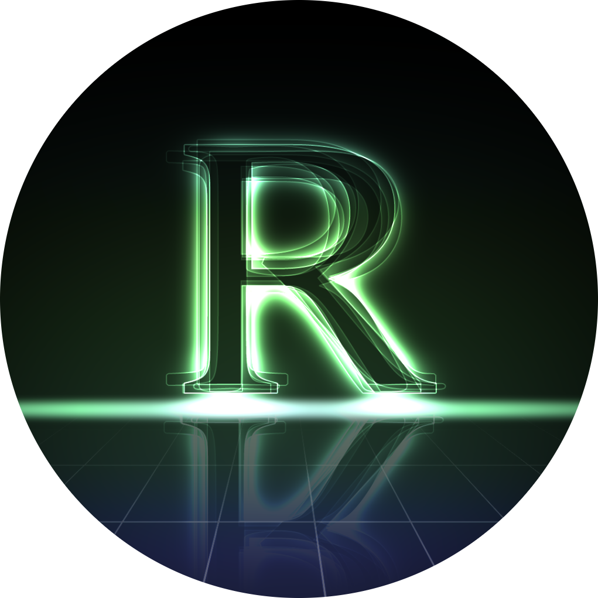

What is RAZ?
RAZ started as a small Discord server and has grown into a connected ecosystem of community, games and tools.
What began as a simple Discord server slowly evolved when custom Discord bots were added and automation became part of the experience.
Soon after, a personal Minecraft server was launched — first running on a laptop, later moved to dedicated hosting.
Today this Minecraft project is part of a three-server network.
As streaming on Twitch started and the audience grew, the Discord transformed into a real community hub.
Members now use it to chat about their favorite topics, join Minecraft events and parties, and receive live stream and server updates.
Minecraft Network
A custom-built Minecraft network focused on community, progression and long-term gameplay — not pay-to-win.
Open Network
RAZ Discord
The central hub where players and members connect, get updates, and organize Minecraft events and streams.
Join Discord
RAZ Bot
A custom moderation and utility bot built specifically to manage and automate the RAZ ecosystem.
View Bot